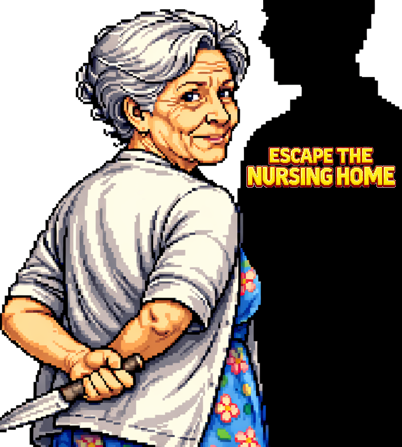

Projects

Ongoing Projects
Projects that are yet to be finished, but being made in ADHD speeds
Finished projects
Projects that are currently finished
Worldbuilding
Maps, lore and ideas for my settings.
About Me
Welcome to Dungeons Corner
Hey there! I’m just a solo indie game maker who loves building TTRPG systems and quirky, experimental projects. This is my little corner of the world where imagination rules, dice decide, and stories come alive.
Why I’m Here Honestly? I just want to have fun, share my ideas, and maybe make you smile (or laugh) along the way. I hope my projects spark a little adventure at your table and give you moments that feel like magic.
What You’ll Find - Playable maps designed to be clear and easy to use - A simple, consistent visual style that keeps the focus on fun - Systems and tools made to boost your imagination and storytelling
The Style Everything here is made by me, in a way that’s practical, playful, and a little bit charming. I care more about creating atmosphere and joy than making things hyper-realistic, so your game—and your stories—stay front and center.
Visit my Itch.io page